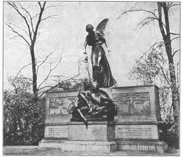
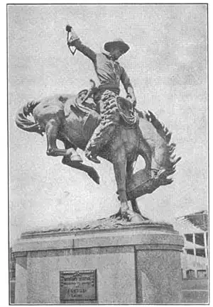
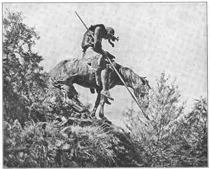

59
THE END OF THE TRAIL
路的尽头

DO YOU save the best things till last? I know a little girl who was having tea with her aunt. The little girl very carefully ate all of her cake except the chocolate icing. She was saving the icing till last because she liked it best.
“I see you don’t like your chocolate icing,” said her aunt. “I just love chocolate icing, so I’ll eat it myself.” And the aunt did eat it all before the little girl could tell her she really loved chocolate icing too.
Well, I’ve saved till last several statues that I think you may like best of all. They are not supposed to be quite as great and famous as the Greek sculpture, or the best Renaissanee statues or Saint Gaudens’s work, but here they are.

No.59-1 EUGENE FIELD MEMORIAL（《尤金·菲尔德纪念碑》） MCCARTAN（麦卡坦 制）
Photograph by Ewing Galloway
The first of my saved-till-last statues is a monument in memory of Eugene Field. Eugene Field was the man who wrote those jolly poems “Wynken, Blynken, and Nod,” and “The Sugar Plum Tree.” The sculptor might have made a portrait bust of Eugene Field, but instead he made something much more interesting. It is a statue of a little boy and girl who have fallen sound asleep because a fairy has waved poppy blossoms over them. Poppy blossoms, you know, are supposed to make you sleepy. You can see the poppy blossoms in the fairy’s hand.

No.59-2 BRONCO BUSTER（《驯马师》）
PROCTOR（普鲁克特 制）
The fairy, and the little boy and girl are in full round. Then there are scenes carved in low relief. One scene shows Wynken, Blynken, and Nod sailing along in the wooden shoe, with fish jumping all around theln. You remember in the song they had nets of silver and gold. You can see the nets hanging from the stern of the shoe. Another scene shows the Sugar Plum Tree with a pussy cat up in the branches and a little dog and some children looking up at the cat.
The sculptor who made the Eugene Field Memorial (it is really a fountain in Chicago) is Edward McCartan of New York. He also made a very beautiful marble statue of the Moon Goddess Diana out hunting with her greyhound.
I think you’ll like the next sculptor because you probably like cowboys and Indians and animals. Alexander Phimister Proctor has made statues of all of these. He helped Saint-Gaudens model the horse for the Sherman statue. Proctor’s best-known works are the famous Princeton Tigers. There are two big bronze tigers, one on each side of the entrance to Nassau Hall, a building at Princeton University.
Now look at the Bronco Buster by the same sculptor. It stands in Denver. The bronco, or cowboy horse, is trying to throw its rider. The bronco has bucked high in the air and is coming down stiff-legged on its two front feet. What a jolt the cowboy must be getting! Notice how the whole weight of this equestrian statue is carried by the two front legs of the horse.
James Earle Fraser is the sculptor whom we have saved to the very last. We can call him an all-round sculptor because he is good at large statues in the round as well as reliefs and portraits, medals and coins. He can do people and animals. He has modeled for equestrian statues horses that are more than life-size and he made the tiny buffalo on the United States five-cent coin—the buffalo nickel. When you are studying United States history, see if you can get hold of a picture of James Earle Fraser’s statue of Alexander Hamilton. It is a wonderful statue, full of dignity and grace.
James Earle Fraser designed the Victory Medal given to each American who served in the army or navy during World War I. Perhaps someone in your family bas one of these medals. The medal has on the front side a has relief figure of Victory. As this is an American medal, the sculptor put a crown with spikes on Victory’s head like the crown on the Statue of Liberty. On the back are the names of the countries who were on our side in the war, and a United States shield.
Fraser made a wonderful portrait bust of President Theodore Roosevelt, who liked it so much he said he would never pose for another bust.
And now last of all comes Fraser’s best-known statue. It is the famous End of the Trai— an exhausted Indian on a weary, worn-out horse. A strong wind blows at their backs. You can see the Indian’s blanket and the horse’s tail whipped forward by this wind. Everything suggests weariness. The horse’s head droops low, the Indian’s head nods forward, his spear points to the ground. You feel that both horse and rider have made a terrible journey, without rest, and have reached the end of the trail too tired to keep awake any longer. The End of the Trail is to mark in San Francisco the western end of the auto highway which runs across the United States from the Atlantic to the Pacific.
In this book it will mark the end of our trail of sculpture. And now that you and I have finished this trip of ours along the trail of sculpture, from long-ago Egypt to nowadays America, I hope you are not so tired out at the end of the trail as Fraser’s Indian seems to be. Our trip had to be short, and so we missed seeing some of the finest statues and talking about some very good sculptors. And that is really a good thing. There is so much left for you to see that it should make you want to take the sculpture trail again and learn to know the sculpture I haven’t even mentioned in this book. You, just like Buffalo Bill, will have to search for signs along the trail. I wish you a very happy journey.

No.59-3 END OF THE TRAIL（《路的尽头》） FRASE（弗雷泽 制）
Photograph by Ewing Galloway
【中文阅读】
你喜欢把最好的东西留到最后吗？我认识一个小女孩，有一次，她正和她的阿姨一起喝下午茶。小姑娘小心翼翼地把蛋糕全部吃掉，却留下了巧克力冰糕。她之所以把冰糕留到最后，因为那是她的最爱。
“我看你不喜欢吃巧克力冰糕，”她阿姨说，“而我却很喜欢吃，所以就给我吃吧。”可小姑娘还没来得及说她也很喜欢吃，她阿姨就把巧克力冰糕都吃了。
是的，我把几座雕像留到现在才做介绍，相信你可能也是最喜欢的。它们或许不如古希腊的雕刻、文艺复兴时期的雕像或圣高登的作品那么优秀和出名，但我还是想把它们介绍给大家。
我留到最后的第一座雕像是《尤金·菲尔德纪念碑》。尤金·菲尔德是一位诗人，写了很多欢快的诗歌，如《云肯、布尼肯与诺德》和《糖梅树》。这位雕刻家本来可以为尤金·菲尔德制作一座半身像，但他却选择了制作一些更有意思的东西。他刻了一对熟睡中的男女小孩，一位仙女在他们头上方摆弄着罂粟花。我们都知道，罂粟花会使人昏昏欲睡。你可以从图片上看到仙女手中的罂粟花。
图片上的仙女、小男孩和小女孩都是深圆雕，而其他场景则是用浅浮雕完成。其中一个场景展示的是云肯、布尼肯和诺德乘着木船航行，水里的鱼儿在他们周围欢快地跳跃着。你还记得诗歌中提到他们有银网和金网吧。你能在图片上看到捕鱼网挂在船尾上。另一个场景展示的是一颗糖梅树，树枝上有一只猫咪，而一条小狗和一群孩童在树底下朝那只猫张望。
《尤金·菲尔德纪念碑》（它实际上是一座位于芝加哥的喷泉）的制作者是纽约的爱德华·麦卡坦。他还刻了一座非常漂亮的大理石像，内容是月亮女神狄安娜领着她的猎犬外出狩猎的场景。
我想你一定会喜欢下面即将出场的这位雕刻家，因为想必大家都很喜欢有关西部牛仔、印第安人以及动物的故事。亚历山大·菲米斯特·普鲁克特雕刻了所有这些题材的雕像。他曾帮助圣高登制作了谢尔曼雕像中的马像模型。普鲁克特最著名的作品要数《普林斯顿老虎》了。这是两只很大的青铜虎像，分别立在普林斯顿大学纳莎堂这座建筑物的门口两侧。
接下来看看《驯马师》吧。它与《普林斯顿老虎》都出自同一位雕刻家之手。现在《驯马师》竖立在丹佛。从雕像上我们可以看到，野马，就是牛仔跨的马，使劲想把牛仔摔下去。它后腿高抬跃到空中，两条前腿再直挺挺地落到地上。可想而知，这位牛仔一定被震得厉害吧！请注意看，整个骑马像都是靠马的两条前腿支撑起来的哦。
我们最后要介绍的是詹姆斯·厄尔·弗雷泽。我们一般称他为全能雕刻家。他不仅擅长制作大型圆雕，还刻浅浮雕、半身像、勋章和硬币；他既雕人物，也刻动物；他既做比真马更大些的马儿模型，又在美国五分硬币上刻微型野牛像——野牛镍币。在研习美国历史时，你可能会看到詹姆斯·厄尔·弗雷泽为亚历山大·汉密尔顿刻的一尊雕像。这尊像很棒，突出了高贵和优雅。
詹姆斯·厄尔·弗雷泽还设计了胜利勋章，这些勋章是颁发给那些参加第一次世界大战的美国士兵的。或许你家族中某位成员就拥有这样一枚勋章。勋章正面是胜利女神的浅浮雕。因为这是美国独有的勋章，所以雕刻家在胜利女神的头上戴了一个尖状皇冠，就像《自由女神像》上自由女神佩戴的皇冠一样。勋章的反面是美国在第一次世界大战时的盟国名称和一枚美国盾。
弗雷泽还为西奥多·罗斯福刻了一尊很棒的半身像。罗斯福总统非常喜欢这尊半身像，还发誓说他不会再摆姿另刻半身像了。
接下来是弗雷泽最为著名的雕像——《路的尽头》。这座雕像刻画的是一位筋疲力尽的印第安人骑在疲倦的马背上。这时从后面吹来一股强劲的风，使人看到，印第 安人的毯子和马尾巴被风吹得向前摆动。雕像上的所有事物都透露出一种深深的疲倦之感。马低着头，印第安人也搭耸着脑袋，他的长矛指向地面。你能感觉到，马儿和骑士刚刚走完了一个令人疲惫不堪的旅程。他们一路马不停蹄，终于到达旅途的终点。而此时他们实在太累了，再也没有办法保持清醒了。《路的尽头》标志着旧金山汽车高速公路西段的终点。这条公路从大西洋到太平洋，穿越了整个美国。
而在此书中，这座雕像也预示着我们雕刻之旅的终结。既然我们结束了从古埃及到今天美国的漫长的雕刻之旅，我希望你不要像弗雷泽雕像上那个印第安人在走到路的终点时那样疲惫不堪哦。因为在本书中我们不得不尽量缩短旅程，所以我们错失了一些优秀的雕刻家以及很棒的雕像。不过这也不失为一件好事，因为它给我们留下了重新踏上雕刻之旅的机会，去学习那些本书未提及的雕刻作品。你应该像巴法罗·比尔那样沿途寻找信号。我衷心地希望你能享受愉快的旅行。